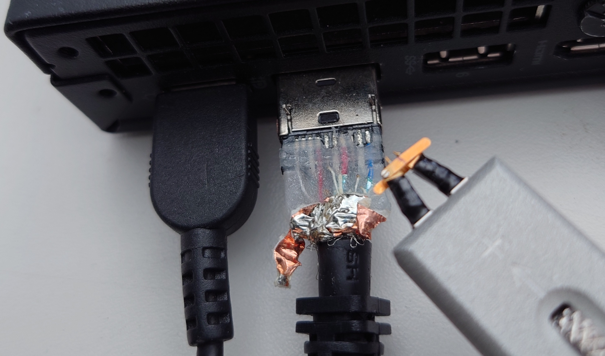

Challenge #580
DisplayPort
Với đầu dò vi sai siêu nhanh của mình, tôi đã đo được tín hiệu vi sai giữa chân số 1 và số 3 của đầu nối DisplayPort cắm trên PC của mình. Đó là một tín hiệu nhị phân nối tiếp ở tốc độ 1,62 Gigabit/giây. Tôi đã tiền xử lý tín hiệu và tái tạo lại chính xác chuỗi bit được truyền bởi card đồ họa (tương thích với chuẩn DisplayPort 1.2). Tôi đã lưu các bit này vào một tệp nhị phân theo định dạng sau: 8 bit mỗi byte, bit có trọng số cao nhất là bit đầu tiên được truyền (MSB first).
Tôi biết rằng tại thời điểm thu tín hiệu, màn hình (duy nhất) của tôi được cấu hình ở độ phân giải 800x600 75Hz 24 bit/pixel RGB 1-lane, và hiển thị bức ảnh các đồng nghiệp trong văn phòng cầm lá cờ (flag) trên bàn tay (nhỏ bé) của họ.
Tôi đã làm mất bức ảnh tuyệt đẹp này, bạn có thể tái tạo lại nó từ bản chụp này không?
Dưới đây là bức ảnh cho thấy vị trí đã thực hiện phép đo (chỉ mang tính chất tham khảo, không bắt buộc để giải bài).
Lưu ý: bạn không cần phải mua tài liệu tiêu chuẩn, hãy tìm kiếm trên internet!

Tệp cần nghiên cứu:
../files/DisplayPort.bin